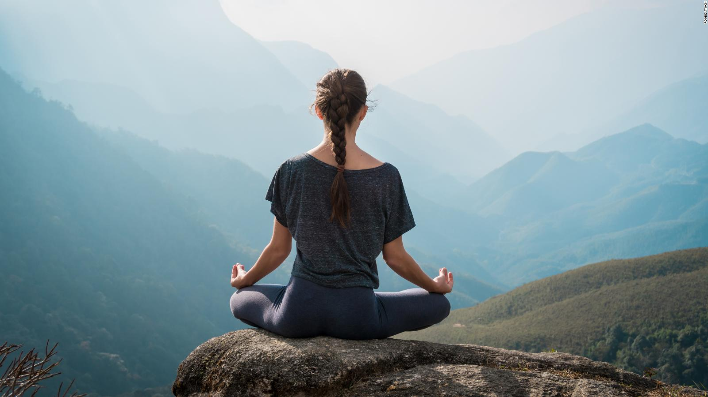
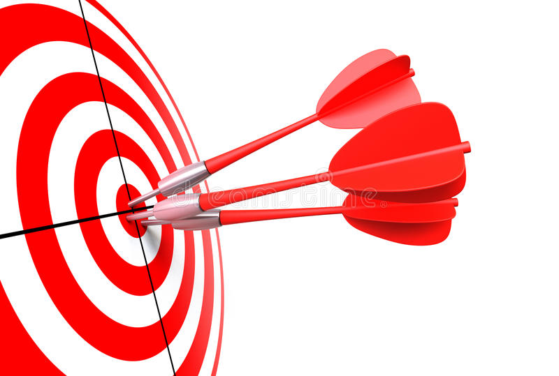
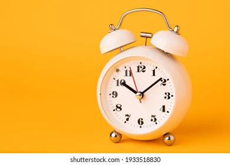

-

Mindfulness en 3 pasos
El Mindfulness es la focalización de la atención en el momento presente, es un método para conseguir la atención plena, centrándonos en lo que está sucediendo “aquí y ahora”, aceptándolo sin más, sin intentar ...
-

Técnicas de relajación
Esta actividad va dirigida a todas aquellas personas con problemas de ansiedad. Te damos herramientas para superar esos picos de ...
-

Cómo establecerse objetivos
¿Te cuesta ponerte objetivos? ¿No eres capaz de seguir los objetivos que te estableces? En esta actividad, mediante la practica te enseñaremos como establecer objetivos...
-
Organiza la semana
Empezar la semana con buen pie es clave para cumplir tus objetivos y no tener ansiedad. Por ello, en esta actividad organizaremos juntos la semana y después te datemos todas las herramientas para que lo puedas hacer individualmente ...
-

Dedicate tiempo
En el día a día, se nos olvida dedicarnos tiempo, lo cual puede ocasionar depresiones y ansiedad. Por ello, te enseñamos como sacar tiempo para ti y que priorizar en ese tiempo....
-
Momentos en pareja
ELa vida en pareja se ve afectada por lo agobios del día a dia, por ello pasar tiempo en pareja de calidad es sumamente importante. Esta actividad va dirigida a ambos en la pareja. ...
-
Relajate en pareja
Relajarse es importantisimo, pero ¿y si lo hacemos acompañados? Puede ser una actividad que restablezca ese vinculo que tenías con tu pareja...
-
5 minutos de respiraciones
Esta demostrado que 5 minutos al día de respiraciones controladas, ayuda a controlar los niveles de ansiedad. En esta actividad te enseñamos este magnifico truco. ...